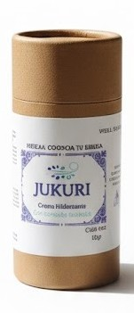
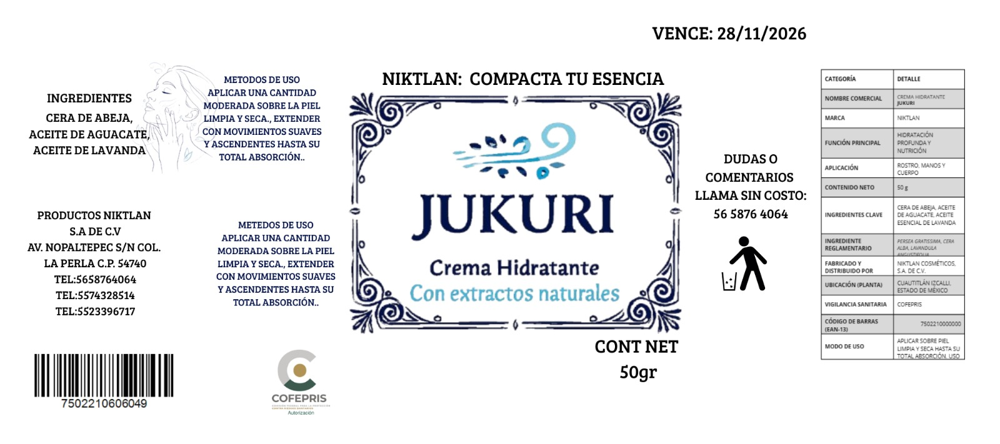

Bienvenido a la página oficial de NYKTLAN, en donde podrás encontrar cosméticos hechos a mano con ingredientes naturales.
El nombre NYKTLAN surge de la combinación dedos palabras de origen maya: nikté, que significa flor, y tlán, que significa lugar de.
En conjunto, “lugar de las flores”. Este concepto refleja la esencia de nuestro país y simboliza la experiencia que buscamos ofrecer:
productos que transmiten frescura, tranquilidad y un aroma único, como si estuvieran en un campo de flores.
Nuestro producto principal lleva por nombre JUKURI, que en purépecha significa fresco. Elegimos este término porque creemos firmemente
que el cuidado personal debe generar bienestar, y no existe mejor sensación al aplicar una crema que dé frescura y confort.
Misión
Ofrecer cremas humectantes sólidas y portátiles para que el cuidado de tu piel sea un acto sencillo y constante.
Visión
Construir un legado de confianza donde el cuidado de la piel con nuestras cremas sólidas sea un hábito que se transmita de una generación a otra,
siendo sinónimo de eficacia y bienestar perdurable.
Valores
Inteligencia colectiva: Reconocemos que las mejores ideas surgen de la colaboración. Fomentamos un entorno donde cada voz es escuchada,
donde la experiencia de uno se convierte en el aprendizaje de todos, y donde los logros se celebran como un triunfo grupal.
Portabilidad real: Nos obsesiona que nuestros productos sean verdaderamente fáciles de llevar y usar en cualquier
momento. Probamos rigurosamente que quepan en un bolsillo o bolso pequeño sin derramarse.
Comodidad que genera constancia: Diseñamos para eliminar fricciones. Si el producto es cómodo de usar, la persona lo incorpora naturalmente
a su rutina diaria. Nuestro éxito se mide por ayudarte a crear un hábito sin esfuerzo.
Calidad que perdura: Usamos materias primas estables y realizamos controles para garantizar que cada barra mantenga su textura, aroma y
efectividad desde el primer hasta el último uso.
Innovación práctica: No innovamos por moda, sino para resolver problemas reales. Nos preguntamos: ¿esto hace la vida más fácil a nuestro
cliente? Si la respuesta es no, no lo hacemos.
Mejora continua: Escuchamos activamente el feedback de nuestros clientes para refinar fórmulas, ajustar tamaños y corregir
errores. Siempre estamos buscando cómo ser un poco mejores.
Responsabilidad con el entorno: Nos comprometemos a evaluar el impacto ambiental de nuestras decisiones, priorizando proveedores locales y
materiales de bajo impacto siempre que sea posible y viable para el negocio.
Objetivo general
Crear y posicionar cremas sólidas y termorresistentes para simplificar la portabilidad de cremas convencionales a la vez que cuidamos la piel de los consumidores
y el medio ambiente.
Objetivos específicos
Crear una línea de cremas sólidas con ingredientes naturales que resistan altas temperaturas.
Diseñar envases ecológicos y portables que reflejen la esencia natural de la marca.
Desarrollar una página web oficial para la empresa que funcione como canal de venta e información.
Realizar campañas en redes sociales para destacar la practicidad y beneficios de las cremas sólidas.
Implementar un programa de muestras para que los clientes prueben los productos antes de comprar.
Creación del Producto
Este producto responde a la necesidad de mantener la piel hidratada y protegida de factores externos como la exposición al sol, la
contaminación y los cambios de clima, que suelen resecarla y dañarla. Además, fomenta el bienestar integral a través de la sensación
de frescura y contribuye al reconocimiento y preservación de la cultura maya mediante el uso de su lengua en la denominación del producto.
A continuación se comparte un video de cómo se desarrolló el producto.

Se colocará la etiqueta sobre los ingredientes empleados en la creación del producto.

Actualmente la crema tiene un costo de $91.29 MXN por 50g de crema.
Actualmente este producto está siendo realizado en el Tecnológico de Estudios Superiores de Cuautitlán Izcalli